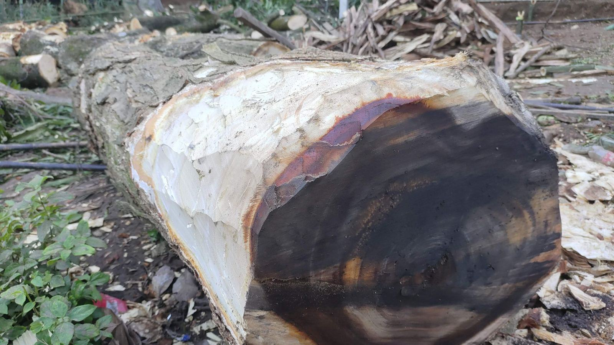

Tjänster
Östergötland har några av Nordeuropas tätaste bestånd av jätteekar, och många står på privata gårdar. Vi arbetar efter Naturvårdsverkets åtgärdsprogram för särskilt skyddsvärda träd och tar hellre bort tio procent av kronan i omgångar än fäller ett träd som kan stå i hundra år till.
Vad behöver ditt träd?

Veteranekar på gårdar
En ek som är 400 år gammal blir ofta ihålig och tung i toppen. Genom att sänka kronan med några meter i taget minskar vi hävstången på stammen.
Ett vanligt upplägg är tre beskärningar med fem års mellanrum.

Riskbedömning och protokoll
Vi bedömer rötskador, sprickor och rotförankring med klubba, borr och ögon. Du får ett protokoll med foto, riskklass och förslag på åtgärd.
Protokollet används ofta som underlag till länsstyrelsen eller försäkringsbolaget.

Alléer och kulturmiljöer
Lindalléer vid herrgårdar och kyrkor är skyddade enligt miljöbalken. Vi hjälper till med dispensansökan och planerar beskärningen så att allén behåller sin form.
Hamlade lindar beskärs i samma cykel som de alltid har haft.

Fällning när det behövs
Ibland är ett träd för skadat för att stå kvar nära ett hus eller en väg. Då sektionsfäller vi och lämnar gärna stamdelar som faunadepå i hagen.
Grov ekved kan också kapas och klyvas åt dig.
Från knackning på stammen till uppföljning
- 1

Vi tittar på trädet
Karin eller Per kommer ut, knackar på stammen och fotograferar kronan. Ofta borrar vi ett provhål för att se hur tjock den friska veden är.
- 2

Plan och tillstånd
Du får ett skriftligt förslag med fast pris. Står trädet i en skyddad allé eller i ett Natura 2000-område hjälper vi till med ansökan.
- 3

Beskärning
Vi beskär helst i september–mars när fåglarna inte häckar. Klättraren arbetar alltid med en markperson som har räddningsutbildning.
- 4

Uppföljning
Efter fem år kommer vi tillbaka och ser hur trädet har svarat på beskärningen.
Utbildade för de svåraste träden
- European Tree WorkerTre av oss är ETW-certifierade och omcertifieras vart femte år.
- ISA Certified ArboristKarin är certifierad av International Society of Arboriculture sedan 2008.
- Svensk ArboristexamenAlla klättrare har examen från arboristutbildningen och motorsågskörkort AB.
- Ansvarsförsäkring 10 MkrVår försäkring hos Länsförsäkringar Östgöta täcker skador på byggnader och gravvårdar.